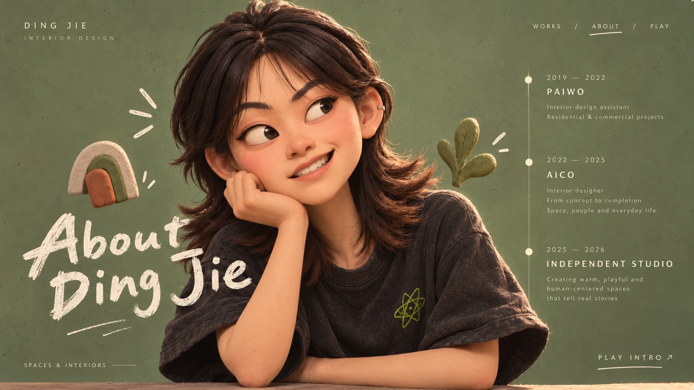
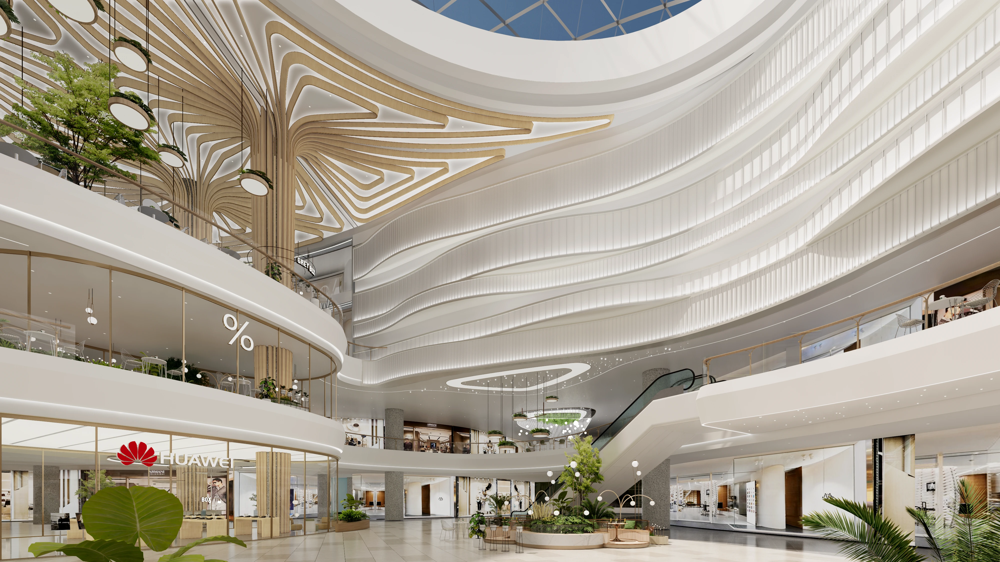
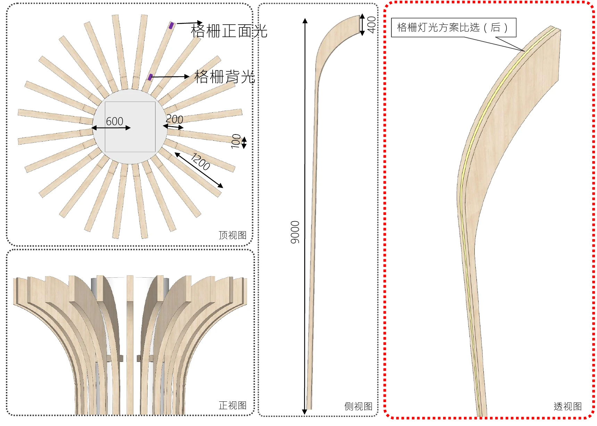
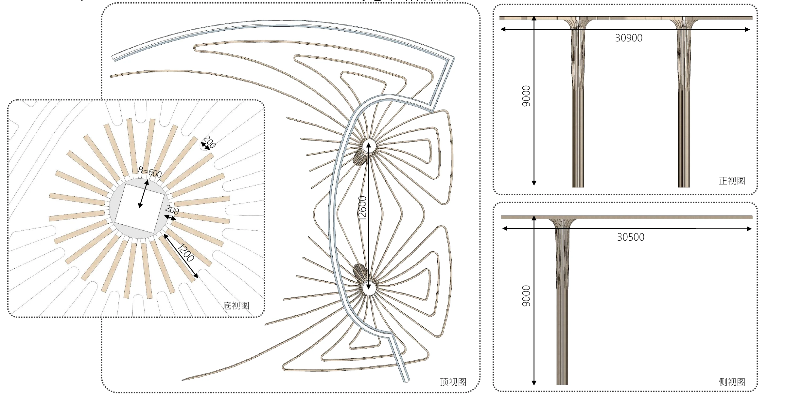

进场，先观察落脚点。
导演版已加入专用的攀爬、平衡、触碰、后退、坐姿、抓图、推回与整理姿态。重点看动作因果、阅读节奏和前后幕衔接；这是关键姿态与网页调度的演示，连续肢体过渡及口型仍可继续细化。
十幕，共用一条表演路线。
每个交接都保留人物的出口位置、面向、接触物与下一幕落脚点。本页已经实演“封面 → 东基 → 泗泾”；其余接幕按下面的连续关系编排。
封面接入 · 东基表演 · 泗泾接幕 · 82 秒导演版




导演版已加入专用的攀爬、平衡、触碰、后退、坐姿、抓图、推回与整理姿态。重点看动作因果、阅读节奏和前后幕衔接；这是关键姿态与网页调度的演示，连续肢体过渡及口型仍可继续细化。
每个交接都保留人物的出口位置、面向、接触物与下一幕落脚点。本页已经实演“封面 → 东基 → 泗泾”；其余接幕按下面的连续关系编排。